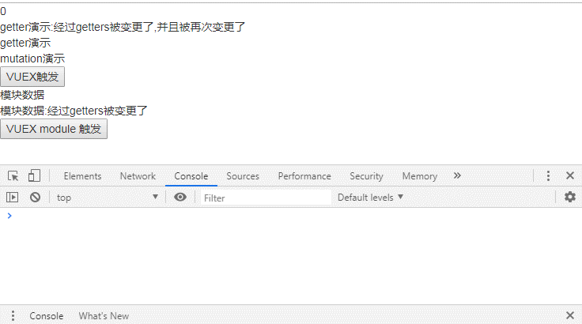

基于vue-cli的示例：
页面实际展示内容：

main.js
import Vue from 'vue'
import App from './App.vue'
import store from './store/vuexStore' //引入状态管理 store ,PS:名称只能是store,如变更会导致组件中无法获取到
new Vue({
store,//注册store(这可以把 store 的实例注入所有的子组件),PS:名称只能是store,如变更会导致组件中无法获取到
render: h => h(App)
}).$mount('#app')vuexStore.js vuex的定义，在main.js中import
import Vue from 'vue';
import Vuex from 'vuex'; //引入 vuex
Vue.use(Vuex); //使用 vuex
const state = {
// 初始化状态
stateData1:0,
stateData2:['a',1],
stateData3:{attr1:'saa'},
stateData4:'',
stateData5:true,
stateData6:null,
stateData7:undefined,
stateData8:"getter演示",
stateData9:"mutation演示",
stateData10:"modules命名冲突演示",
}
export default new Vuex.Store({
state:state,
getters: {//类似计算属性，返回值会根据它的依赖被缓存起来，且只有当它的依赖值发生了改变才会被重新计算
getterData1: state => {//接受第一个参数state
return state.stateData8+":经过getters被变更了"
},
getterData2: (state,getters) => {//接受第二个参数getters,并可通过其调用其他getter
return getters.getterData1+",并且被再次变更了"
},
getterData3:(state) => {
return state.stateData10
}
},
// mutation 必须是同步函数(但使用setTimeout仍然是有效的)
mutations: {//提交(修改)state
mutationData1:function(state,payload){//只接受2个参数，参数1：state，参数2：传入参数
window.console.info("经过mutationData1传入参数为"+payload);
state.stateData9+=":经过mutations被变更了，传入参数为"+payload;
},
/* 使用ES6的自动生成修改方法的骚操作，必须在外提前定义state，但是有代价（代码静态检查完蛋了）来自参考：https://forum.vuejs.org/t/vuex-state/39459/5
...Object.keys(state).reduce((obj, key) => {
return {
...obj,
[key]: (state, payload) => state[key] = payload,
}
}, {})
*/
...Object.keys(state).reduce((obj, key) => {
return {
...obj,
[key]: (state, payload) => {
//window.console.info(state[key])
//window.console.info(payload)
switch (Object.prototype.toString.call(state[key])) {
case "[object Number]":
if("[object Number]"==Object.prototype.toString.call(state[key]))state[key] = payload
else window.console.error("传入参数类型错误:Number "+state[key]);
break;
case "[object Array]":
break;
case "[object String]":state[key] = payload
break;
case "[object Boolean]":state[key] = payload
break;
case "[object Null]":state[key] = payload
break;
case "[object Undefined]":state[key] = payload
break;
case "[object Object]":
break;
default:
break;
}
},
}
}, {})
},
actions: {
//名称可以与mutations相同，可以调用多个mutations（分发）
actionData1 (context,payload) {//只接受2个参数，参数1：context，参数2：传入参数
//context 是 store 实例具有相同方法和属性的 context 对象,但 context 不是 store 本身
context.commit('mutationData1',payload);//通过 commit 调用 mutations
setTimeout(() => {//可以包含任意异步操作
context.commit('mutationData1','异步操作1');//通过 commit 调用 mutations
}, 1000)
setTimeout(() => {//可以包含任意异步操作
context.commit('mutationData1','异步操作2');//通过 commit 调用 mutations
}, 2000)
},
actionData2 (context,payload) {
payload;
context.dispatch('actionData1');//通过 dispatch 调用其他 actions
},
//利用ES6+?新特性 async/await 组合 actions
},
modules: {
module1:{
namespaced: true,//设置后，其成为带命名空间的模块
state: {
moduleStateData1:"模块数据",
},
mutations: {
moduleMutationData1:function(state,payload){//同样只接受2个参数，参数1：当前module1的state，参数2：传入参数
state.moduleStateData1+=":经过mutations被变更了，传入参数为"+payload;
},
},
getters: {
/* 参数1：state，为当前module1的state
参数2：getters，为当前module1及其子模块的 getters（子模块会带路径module1_1/）; 附：namespaced:true为仅当前module1的getters,否则为根节点getters
参数3：rootState，根节点的state
参数4：rootGetters，根节点的getters
*/
moduleGetterData1: (state,getters,rootState,rootGetters) => {
getters;rootState;rootGetters;
return state.moduleStateData1+":经过getters被变更了"
},
},
actions: {
/* 参数1：context，
包含commit,
dispatch,
getters, 为当前module1及其子模块的 getters（子模块会带路径module1_1/）
rootGetters, 根节点的getters
rootState, 根节点的state
state, 为当前module1的state
参数2：传入参数
*/
moduleActionData1(context,payload) {
payload;
// 如需调用根节点的全局action 需传入第三参数 { root: true }
context.dispatch('actionData2') // 实际调用 'module1/actionData2' 不存在会报错
context.dispatch('actionData2', null, { root: true }) // 实际调用 'actionData2' 调用成功
// 如需调用根节点的全局mutation 需传入第三参数 { root: true }
context.commit('mutationData1') // 实际调用 'mutation/mutationData1' 不存在会报错
context.commit('mutationData1', null, { root: true }) // 实际调用 'mutationData1' 调用成功
},
//模块 action 直接挂在根节点上的方法：添加 root: true，并将这个 action 的定义放在函数 handler 中
moduleActionData2:{
root: true,
handler (namespacedContext, payload) {
namespacedContext;payload
}
}
},
modules: {//子模块，将继承 父模块 的命名空间
module1_1:{
//如不设置，将会与父模块的命名空间一致，不会有单独的命名空间
namespaced: true,//例，设置前: module1/; 设置后: module1/module11/
state: {
moduleStateData1_1:"模块数据1_1",
},
getters: {
moduleGetterData1_1: state => {//接受第一个参数为当前module11的state
return state.moduleStateData1_1+":经过getters被变更了1_1"
},
},
}
},
},
module2:{
state: {
module2StateData1:"模块数据2",
},
/*
namespaced: 默认是 false,
action、mutation 和 getter 会注册在 根节点，即父store下
以getter为例：
*/
getters: {
/*
仍然用 $store.getters.moduleGetterData1 直接获得
和父store 的 getters 同名将无效，并且浏览器会报警 [vuex] duplicate getter key: getterData1
*/
getterData3: state => {
return state.module2StateData1+":同名测试"
},
},
}
//在store创建后动态注册模块...
}
})Example.vue
<template>
<div>
{{this.$store.state.stateData1}}<br>
{{this.$store.getters.getterData2}}<br>
{{this.$store.state.stateData8}}<br>
{{this.$store.state.stateData9}}<br>
<input type="button" value="VUEX触发" @click='vuexClick'><br>
<!-- 模块modules -->
{{this.$store.state.module1.moduleStateData1}}<br>
{{this.$store.getters['module1/moduleGetterData1']}}<br>
<!-- module2 的 getters同名测试:和 父Store 的 getters 同名将无效，并且浏览器会报警 [vuex] duplicate getter key: getterData1 -->
<!-- {{this.$store.getters.getterData1}}<br> -->
<input type="button" value="VUEX module 触发" @click='vuexModuleClick'>
</div>
</template><script>
//关于 Vue 实例中的 this: 在Vue实例中，要获取 data 中的数据 或者 methods 中的方法，必须使用 this. 访问，这里的 this 表示 Vue 实例对象
export default {
methods:{// methods 属性中定义了当前 Vue 实例所有可用方法
vuexClick(){
//获取state
this.$store.state.stateData1;
//获取getters
this.$store.getters.getterData2;
//修改state
//this.$store.state.stateData1="直接修改";//直接修改，可以修改但不推荐
//调用 commit() 通过 mutations 修改 state
this.$store.commit('mutationData1',2);//只接受2个参数，参数1：mutations名称，参数2：传入参数
//调用 dispatch() 通过 actions 修改 state,（PS:在 actions 中仍然要通过 commit() 调用 mutations 修改）
this.$store.dispatch('actionData1',2);//只接受2个参数，参数1：actions名称，参数2：传入参数
},
vuexModuleClick(){
//获取 modules 的 state
this.$store.state.module1.stateData1;
// modules 启用 namespaced 前后的区别:影响 action、mutation、getter 以getter为例：
//启用 namespaced 前：在store下直接获得，但可能导致同名冲突
try {// module2 的 getter 同名冲突测试
this.$store.getters.getterData3;
} catch (error) {
//module2 的 getters同名冲突测试:和父store 的 getters 同名将无效，并且浏览器会报警 [vuex] duplicate getter key: getterData1
window.console.error("module同名冲突测试:"+error)
}
//启用 namespaced 后：无法在直接获得
this.$store.getters['module1/moduleGetterData1'];
//======================子模块=========================
//子模块启用 namespaced 前后
//this.$store.getters['module1/moduleGetterData1_1'];//子模块启用 namespaced 前，继承父模块的路径module1
this.$store.getters['module1/module1_1/moduleGetterData1_1'];//子模块启用 namespaced 后，继承父模块的路径module1，并加上自己的路径module1_1
//=====================================================
//调用 dispatch() 通过 actions
this.$store.dispatch('module1/moduleActionData1',1);
}
},
};